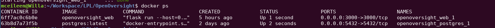
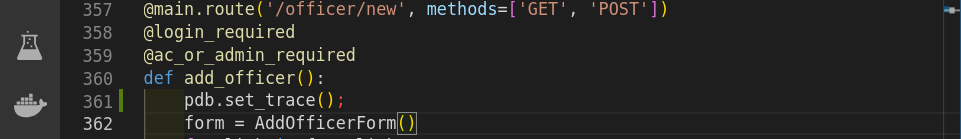
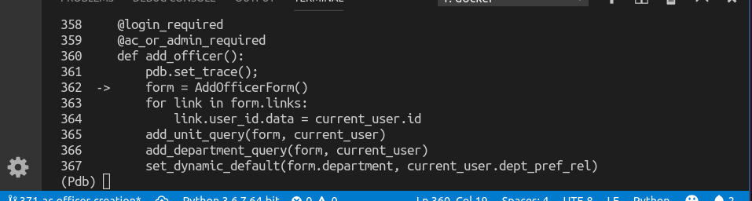

Second Week of RC
Day 4: Debugging a Containerized Application
February 28, 2019
Debugging a containerized application differs slightly from debugging an app running on my local machine, but after a few quick googles, I feel up to the challenge.
First, how to access logs for a docker container? I started by typing `docker ps` into the terminal to see what docker images were running.
After finding the container id of the web container, I run `docker logs ${container_id}` to see the relevant logs.
But what reading the logs isn’t enough to pinpoint a problem? What if I want to initiate a debugger session with pdb?
In that case, I made a few changes to my `docker-compose.yml` so that I can run the app in debug mode and use pdb as needed. I added the below lines to the dockerfile.
stdin_open: true
tty: true
Next, I run `docker attach ${container_id}` in the terminal and navigate to the app in localhost. I’m now able to see the logs output as the app runs. Even better, I can drop a breakpoint in the code and then run pdb commands such as `list` or `next` once the program hits the breakpoint.
Here’s a breakpoint I put in the code to create a new officer.
And here’s a view of the pdb session open in terminal.
